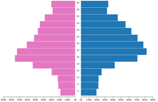

Délivrance de visas
Données brutes pour création de statistiques sur les visas délivrés par la France de 2006 à 2016
- Ce jeu de données permet d'accéder aux nombres de visas journaliers délivrés par la France de 2006 à 2016,
- A l'évolution des visas délivrés par la France en fonction du type de visa, des pays, des tranches d'âges, etc.
- La base de données se compose de tables référentielles (pays, calendrier, sexe, etc.) et d'une table centrale (visa délivré et identifiant vers les tables référentielles)
Origine des Données
Données du ministère des Affaires étrangères sur Data.gouv.fr
Répartition femme/homme des Visas sur la période 2006 - 2016
Motifs des Visas sur la période 2006 - 2016
Études en France
Données brutes sur la mobilité d'étudiants étrangers souhaitant étudier dans l’enseignement supérieur français de janvier 2007 à octobre 2015
Ce jeu de données permet de créer des statistiques sur une période allant de janvier 2007 à octobre 2015 sur la mobilité des étudiants étrangers soumis à visa souhaitant venir étudier dans l’enseignement supérieur français. Le recueil provient de l’application Centre pour les études en France. La nature des données permet d’explorer entre autre :
- Le profil des étudiants qui candidatent,
- Les origines géographiques,
- Les niveaux de formations locaux des étudiants,
- L’offre de formations visée dans l’enseignement supérieur français,
- Les destinations privilégiées,
- Les évolutions durant ces 9 campagnes de candidatures.
Origine des Données
Données du ministère des Affaires étrangères sur Data.gouv.fr
Diagramme global: Domaine principal d'études